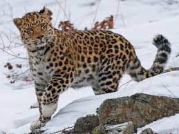

AMUR LEOPARD FACTS

Physical Traits
Long legs for snow
Thick spotted fur
Long tail for balance
Habitat
Russian Far East & China
Forests and mountains
Solitary animal

Diet
Eats deer and small animals
Stealthy hunter
Can go days without food